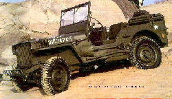

<html>

<head>

<title>The Annotated "Sugar Magnolia"</title>

</head>

<body>

<i>"Light out singing I'll walk you in the morning sunshine..."</i>



<h2>The <i>Annotated</i> "Sugar Magnolia"</h2>

An installment in <a href="gdhome.html"> The <i>Annotated</i> Grateful Dead Lyrics.</a><br>

By <a href="david.html">David Dodd</a><br>

1997-98 Research Associate, Music Dept., University of California, Santa Cruz

<hr>

<a href="#title"><b>"Sugar Magnolia/Sunshine Daydream"</b></a><br>

Words by Robert Hunter and Robert Weir<br>
<p>
<blockquote>
Sugar <a href="http://www-wane.scri.fsu.edu/~mikems/wildflowers/magnolx.jpg" target="new">Magnolia</a> blossom's blooming<br>
Head's all empty and I don't care<br>
Saw my baby down by the river<br>
Knew she'd have to come up soon for air<br>
<br>
Sweet blossom come on under the willow<br>
We can have high times if you'll abide<br>
We can discover the wonders of nature<br>
Rolling in the <a href="#rushes">rushes</a> down by the riverside<br>
<br>
She's got everything delightful<br>
She's got everything I need<br>
Takes the wheel when I'm seeing double<br>
Pays my ticket when I speed<br>
<br>
She come skimming through rays of violet<br>
She can wade in a drop of dew<br>
<a href="#follow">She don't come and I don't follow</a><br>
Waits backstage while I sing to you<br>
<br>
She can dance a <a href="http://dir.yahoo.com/Entertainment/Music/Genres/Folk_and_Traditional/Cajun_and_Zydeco/" target="new">Cajun</a> rhythm<br>
Jump like a <a href="#willys">Willys</a> in four wheel drive<br>
She's a summer love in the spring, fall and winter<br>
She can make happy any man alive<br>
<br>
Sugar magnolia<br>
Ringin' that blue bell<br>
Caught up in sunlight<br>
Come on out singing<br>
I'll walk you in the sunshine<br>
Come on honey, come along with me<br>
<br>
She's got everything delightful<br>
She's got everything I need<br>
A breeze in the pines in the summer night moonlight<br>
Crazy in the sunlight yes indeed<br>
<br>
Sometimes when the cuckoo's crying<br>
When the moon is halfway down<br>
Sometimes when the night is dying<br>
I take me out and I wander round<br>
I wander round<br>
<br>
Sunshine daydream<br>
Walk you the tall trees<br>
Going where the wind goes<br>
Blooming like a red <a href="rose.html">rose</a><br>
Breathing more freely<br>
Light out singing<br>
I'll walk you in the morning sunshine<br>
Sunshine daydream<br>
Walk you in the sunshine<br>
</blockquote>
<hr>
<a name="title"><h3>"Sugar Magnolia"</h3></a>
Recorded on
<ul>
<li><cite><a href="discog1.html#american">American Beauty</a></cite>
<li><cite><a href="discog1.html#europe">Europe '72</a></cite>
<li><cite><a href="discog1.html#dick2">Dick's Picks, vol. 2</a></cite>
<li><cite><a href="discog2.html#hundred">Hundred Year Hall</a></cite>
<li><cite><a href="discog1.html#dick6">Dick's Picks, v. 6</a></cite>
<li><cite><a href="discog1.html#dick10">Dick's Picks, V. 10</a></cite>
</ul>
<p>
Covered by the Pop-O-Pies on <cite>Joe's Third Album</cite> (Subterranean Sub52).
<p>
First performance: June 7, 1970 at the Fillmore West in San Francisco. "Sugar Magnolia" came 
out of a drum solo in the second set, and was followed by a jam on "Louie Louie."
<p>

A note on performance practice: the band often divided the song into two distinct entities,

"Sugar Magnolia," and "Sunshine Daydream." The space between these parts could be as brief as

the space of several beats; could frame a set, as in the closing of Winterland; or be as long 

as a week, in the case of the performance occurring in the 

week of Bill Graham's death, when the "Sunshine Daydream" came during the Polo Field concert

in Golden Gate Park a week after the band opened a show with "Sugar Magnolia" at the Oakland

Coliseum Arena.

<hr>

<h3><a name="follow">She don't come and I don't follow</a></h3>

Compare the lines from the folk song, "Sourwood Mountain"
<blockquote>

"I got a girl in the head of the hollow,<br>

She won't come and I won't call 'er." (<cite><a href="biblio.html#botkin">Botkin</a></cite>, p. 897)

</blockquote>

<hr>
<h3><a name="rushes">rushes</a></h3>
This note from a reader:
<blockquote>
Subject: Annotated GD lyrics<br>
Date: Tue, 28 Apr 1998 11:39:31 -0500<br>
From: DAVID KUDRAV <david.kudrav@adtran.com><br>
<p>
David,
<p>
In reference to "Sugar Magnolia"... the eighth line of the song is
"rolling in the rushes down by the riverside".  You have links from
Magnolia and Rose to their picture, but not to rush, a type of marsh
plant that the song seems to be referencing.
<p>
Here is the main entry from Merriam-Websters online dictionary
(<a href="http://www.m-w.com" target="new">www.m-w.com</a>):
<blockquote>
[...]<br>
Etymology: Middle English, from Old English rysc; akin to Middle High
German rusch rush, Lithuanian regzti to knit<br>
Date: before 12th century<br>
any of various monocotyledonous often tufted marsh plants (as of the
genera Juncus and Scirpus of the family Juncaceae, the rush family) with
cylindrical often hollow stems which are used in bottoming chairs and
plaiting mats
</blockquote>
Hope this helps...
<p>
David Kudrav<br>
dkudrav@adtran.com -- work<br>
dkudrav@eng.ua.edu -- everything else<br>
"May whatever god you believe in have mercy on your soul"--Q
</blockquote>
<p>
And another note from a reader:
<blockquote>
Date:  Mon, 28 May 2001<br>
EBrown1027@aol.com wrote:
<p>
Dear Mr. Dodd,
<p>
Your site is wonderful, and greatly appreciated by the new generation of Deadheads. 
<p>
I was listening to Sugar Magnolia one day while reading J.R.R Tolkien's Fellowship of the Ring, and it occurred to me how much the girl being sung about is like the character Goldberry in the
novel. She is described in the following verses.
<blockquote>
I had an errand there: gathering water lilies<br>
green leaves and lilies white to please my pretty lady<br>
the last ere the year's end to keep them from the winter<br>
to flower by her pretty feet til the snows are melted<br>
Each year at summer's end I go to find them for her<br>
in a wide pool, deep and clear, far down Withywindle<br>
there they open first in spring and there they linger latest<br>
By that pool long ago I found the River-daughter<br>
fair young Goldberry, sitting in the rushes<br>
Sweet was her singing then, and her heart was beating.<br>
</blockquote>
<p>
It seemed especially similar to the line "Saw my baby down by the river" as well as "Rolling in the rushes; Down by the riverside". Hope this helps you, and keep up the great work!
<p>
Sincerely<br>
Emily Brown



</blockquote>
<hr>
<h3><a name="willys">Willys</a></h3>



Made by the Overland Automotive Company, this <a href="http://www.jeepunpaved.com/woj/heritage/index.html" target="new">jeep-type vehicle</a> is no longer in 

production.
<p>
This note from a reader:
<blockquote>
Dear Mr. Dodd:  
<p>
Just happened upon your amazing site while off surfing a fabulous trip of strings on the web. Thought I
  might be able to contribute a nugget of info.  Re: Sugar Magnolia,  "jump like a Willys in four wheel drive". . .   Always one
  of my favorite lyrics for its obscura. When the Willy's jeep first came out, there was some type of maneuver, or trick, that
  an experienced driver could do to make the vehicle actually "leap", jump, or catch air, somehow.  details are sketchy, but
  there was an article in Smithsonian magazine which refers to the idea, and has a great picture of an airborne
  jeep to boot. I haven't done much research on this one, but I've seen the "jumping" trick with the Willy's jeep referenced a
  few other times. (in WWII histories)  I can't however, determine how it was done, or what the origin of the story was. 
  Perhaps it was a clever marketing ploy.  Truly a wonderful piece of ephemera. 
  <p>
  Your website may be the coolest free thing I've ever seen.  I'm certainly going to buy the book. lead on. regards
  <p>
  Mike Mnichowicz<br>
  Milwaukee, WI 
</blockquote>
<p>
I checked into the article Mike mentions, and it appeared in the November 1992 Smithsonian, for 
anyone interested in pursuing the details.

<hr>

First posted: August 30, 1995<br>

Last revised: May 29, 2001
<pre>


















</pre>
</body>

</html>









 



 





